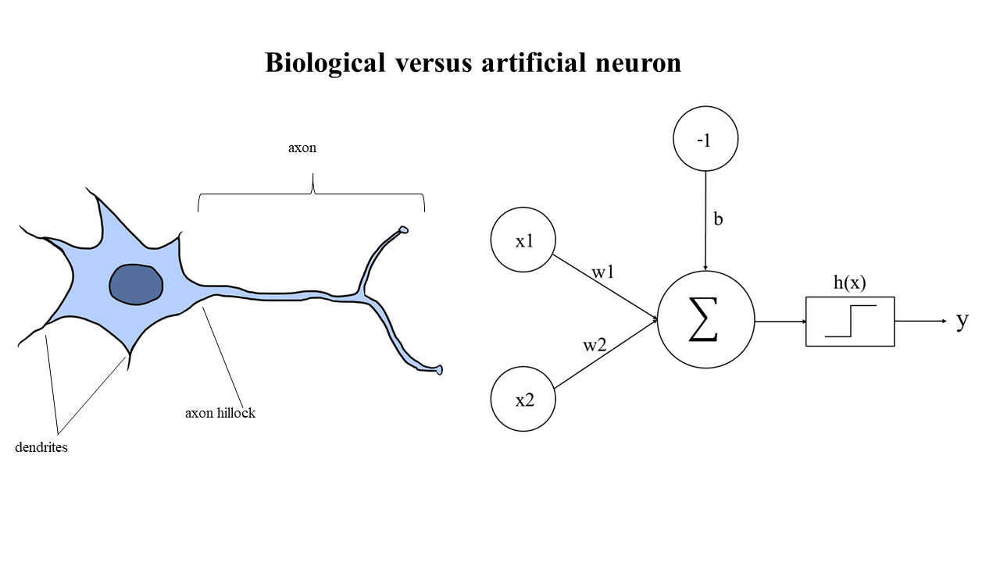
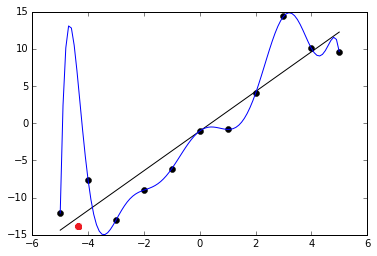

Chapter 6 Data science
Data science focuses on the study of scientific methods for extracting knowledge and insights from data. The techniques and theories come from broad areas of mathematics, statistics, information sciences, and computer science. Machine learning (ML), data mining, and artificial intelligence are an integral part of data science. The three are connected to each other and it may depend on who you ask what that picture looks like (e.g. some include everything under AI, other draw overlapping circles). To make some distinctions and links, expertise in databases and data management is more often mentioned in context of data mining. Machine learning on the other hand is often seen as an inherent part of data mining and artificial intelligence. However, in AI the “traditional” ML is distinguished from deep learning that has its roots in neural networks that spurred a lot of interest already in the 1950s. Deep learning really leaped forward in the 2010s owing to explosion of digital data availability, advances in algorithms and computational power.
Data science is making enormous impact in the biosciences, such as Deepmind’s Alphafold to predict protein tertiary structures from sequence, and nothing suggests that its relevance in (bio)medicine will dwindle in the future. Seizing the opportunity early to learn these methods is a great resource for life science researchers.
6.1 Learning from data
One of the famous definitions of ML is
A computer program is said to learn from experience E with respect to some class of tasks T and performance measure P, if its performance at tasks in T, as measured by P, improves with experience E.
In other words, any program that learns about the world from experience. While the term machine learning has blown up in recent years, a more traditional term is statistical learning, as most algorithms essentially boil down to clever use of statistics.
How does this differ from conventional programming?

6.2 Data-driven research
Historically, any type of data analysis was most often performed after data is collected. Today, these approaches are used already earlier, and in this manner they can inform designing new experiments. The transformation that led to this was technological - we can collect whole genome sequences, acquire 3D brain imaging data, or record movies of protein dynamics inside cells. Most importantly, such data are also made available to the scientific community, enabling any researcher to access databases that may host information about every protein inside a cell, or store the original data collected from high-throughput studies. This offers the possibility to use data science methods for discovering interesting patterns or statistical associations in the data, which upon visualization might reveal insight on biology that can then be used to propose hypotheses to be tested in new experiments.
Later, in the statistics perspective section we will re-visit this as we discuss conventional scientific hypothesis testing.
6.3 Inspired by the brain

Artificial Neural networks (NNs) make up a subset of algorithms within the broader category of machine learning. Broadly speaking, NNs can be thought of as simple models of biological neural systems, in which layers of neurons propagate information from input to output, facilitated by connections (“synapses”) between the neurons in adjacent layers. We model them simply enough as matrix multiplications. These networks can learn by adjusting the synapse strengths, much like the way animal brains learn through long term potentiation.
They are extremely versatile in that the possible variation in model (the number and type of interconnected layers of neurons, and how many neurons per layer) is virtually endless.Neural networks can for example be taught to perform classification, just as animal brains are extremely powerful to classify the information they receive and make decisions based on it (e.g., is it a mouse or a tiger that is just in front of me?). Provided with enough data, they now consistently outperform traditional ML models.
In this course, we also discuss interdisciplinary paths - the discussion of Andrew Ng and Geoffrey Hinton (both very influential in the field of AI) in this video reveals that Geoffrey got influenced by many different fields in his path towards the innovations in AI that is now famous for.
6.4 Data representation
Next, we introduce a few important concepts. The main point is not for you to memorize everything, but to expose you to concepts that you will encounter later if you take a data science course.
Feature space What is data? Depending on who you ask you might get a different answer, but for ML purposes we can usually describe a single data point as a vector of numbers, each number representing the value of some feature. An example of a numerical feature could be continuous like height or a price of a product, or discrete like the number of mutations in a gene. Non-numerical features could include your preference in movies or whether or not you use tobacco. All these features not only can, but actually require to be represented numerically before you can start to do machine learning.

In an abstract manner, we can visualize each feature as spatial dimension, and each data point is simply a point in this space, referred to as feature space. Often we have tens or hundreds of features, and it is easy to lose intuition. Nonetheless, realizing that almost all data can be represented in this very generic manner, we can easily conceptualize any problem within this framework, whether it be health related data, shopping habits or government intelligence and crime statistics.
Overfitting Machine learning can almost always be abstracted to the fitting of a mathematical function to some experimental data. Intuition will have it that the closer we fit to our data points, the more successful we are. This intuition however is only true up to a certain point. After this point, we are essentially “perfecting” our model on trying to predict random noise and outliers. The image below clearly explains why a perfect fit usually is a symptom of overfitting: the blue line would severely misjudge the training point (red) between -5 and -4. For this reason, a simpler linear model is preferred: despite getting some of the training points wrong, it generalizes better, i.e. it would allow to make better predictions about unseen data.

Overfitting is the antithesis of proper generalization. As an analogy of overfitting, you can imagine a student who intensively memorizes every fact without genuine understanding, and thereby performs poorly on new problems (but near perfect on already seen ones). This is exactly how you can spot overfitting: you always keep some of the data you have for testing and when training the model this test data is not used. Then you compare the model performance both in training and test sets. If the model is overfitted, the test error is much higher than the training error. Keep in mind though, that underfitting is also a possibility. In this case, you have selected a too simple model.
Parameters and hyperparameters After a model has been selected, ML is all about finding a set of parameters which reduces what is known as the error function (cost function, see below). For instance in linear regression, the parameters are the coefficients of the regression line (what is actually being learned). This optimization of what value to select for each parameter is what the ML algorithm automatically finds. Another set of parameters, hyperparameters have to be predefined prior to training the model, and usually relate to the way the model is trained (for instance, what should the rate of learning be).
Cost function It is always useful, and often necessary to quantify the model error. This is usually some variation of the deviation between prediction and ground truth (e.g. mean squared error, MSE). While training our data, we are looking for the model parameters which make the error as small as possible. We thus formulate a function, the cost function (also known as loss function), which is a function of the model parameters. The way a model is fitted (or trained) to some data is (explicitly or implicitly) through reducing the cost function. Just like we above conceptualized data features in a hyperdimensional feature space, we can do the same with model parameters. Thus we can imagine a hilly landscape in 3 dimensions, where the x- and y-axis components (e.g. GPS coordinates) represent the parameter values, and the z-axis component (altitude of each point) represents the error. Different models have clever ways to navigate in this parameter landscape in order to reach a local minimum, like a saddle or a valley. Notice however that there might not be a guarantee that the minimum reached is the global minimum, for instance the sea level.
Model complexity A useful distinction between models can be made by considering their complexity. Note that the word “complex” is not synonymous to “complicated”. Complexity simply refers to something composed of many parts. In this context, complexity is related to the number of parameters the model holds. The more parameters we have, the more complex is our model. Simple linear regression has a low number of parameters, but neural networks (especially deep neural networks) have plenty. When doing machine learning, you should generally test multiple models, always starting with the less complex (although more ‘boring’) alternatives. The reason for this is the general tendency for complex models to overfit as well as requiring more training data. A topic that usually comes up in discussions of complexity is bias-variance tradeoff: complex models have usually a low bias, but a high variance. Simple models have it opposite.
The curse of dimensionality Another common problem relates to the number of features (dimensionality) of the input data. Consider a 2-dimensional input space, where each feature can take the value 0,1 or 2. There are a total of 3^2=9 combinations of inputs. As we increase dimensions from 2 to 3 dimensions, we drastically increase the number of possible combinations of inputs from 9 to 3^3=27. Usually the dimensionality far supersedes 3 dimensions. If we want to get a representative sample of this state space, we need exponentially more and more training samples. Even more, many of the features will be completely irrelevant to our final prediction. This makes training on high-dimensional data challenging, but there are methods to deal with it (incl. dimensionality reduction).
Preprocessing A model can never be of higher quality than the data it has been trained on. This can be summarized in the mantra “Garbage in, garbage out”, putting a well-deserved emphasis on ensuring that your data is of decent quality. Moreover, many ML models require the data to come in a certain format, or to be normalized first. In fact, a staggering amount of time of a machine learner’s time goes to preparing the data to be modelled. For these reasons we need to review the data. Images should be plotted and inspected, tabular data should be plotted (histograms, line plots etc). It can also be useful to make note of the mean and median values (if the data is numerical), or normalize it (neural networks require normalization). For non-numerical data (such as classifications of healthy or sick), we need some way to translate the categories into numbers, so they can be understood by a computer. For simple problems,we can simply replace the category with a ‘1’ or a ‘0’, while other problems require slightly more elaborate schemes (e.g. one-hot encoding).
Feature selection and extraction Traditional machine learning requires manual feature selection: you as a scientist need to decide which features you want to gather or use as input to your ML model. There are also statistical techniques to select the “best” (most predictive) features from a dataset. Another related concept is feature extraction, in which new features are created by combining the available ones. This is often done through dimensionality reduction. In modern deep learning, feature selection and extraction has become minimal, by letting the algorithm do it automatically. This is known as feature learning.
Regularization The sensitivity of many learners to overfit can be handled using various techniques, colloquially known as regularization. Regularization techniques are used widely in linear regression to make it robust against outliers and noise, known as L1 and L2 regularization. Neural networks may also be regularized using dropout (random removal of neurons).
6.5 Physical vs statistical model
You may be wondering how the data science approach connects with systems-level thinking? This is actually an open question. However, there are interesting possibilities for synergy. As food-for-thought, here is a Nature article discussing this in context of trying to understand how the Earth behaves, as a system. This article brings up the distinction where physical modelling and machine learning have been seen as two different fields with very different scientific paradigms (theory-driven versus data-driven). In the physical approaches, physical laws are combined to draft causal models where a certain feature (for instance, the gravity force from the moon), has a certain effect (ocean tides). Therefore, physical approaches are in principle directly interpretable and offer the potential of extrapolation beyond the observed conditions. But the quality of the predictions is generally tied to the limited number of ingredients that have been accounted for in the model. In contrast, data-driven approaches are highly flexible in adapting to data that has been collected and are amenable to finding unexpected patterns (surprises). But interpretation, and in particular causality, is often harder to infer. A classic example drawn from “The Visual Display of Quantitative Information” textbook by Edward Tufte illustrates the difficulty of interpreting statistical correlations:
Can we safely believe that the solar activity causes fluctuations in the stock market? For these reasons, physical (or biological) and statistical models can also be synergistic!
Additional reading: